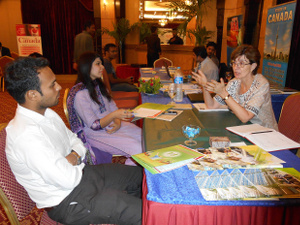

Services
Services
Helen Khan’s Biography
Ms. Khan has over 30 years of experience in the Post-Secondary Education in Canada. She spent 27 years working for the University of Alberta before moving to Pakistan where she now provides information about and services on behalf of UAlberta and Western.
For several years she managed the University of Alberta’s portfolio but in 2017 took on Western as well. After a rigorous on-campus training, she is qualified to provide information and services to students who are interested in studying in Western University, Ontario. She meets with students, visits schools and participates in Pakistan’s National International Education exhibitions.
Canada is her forte. She has the knowledge and capability to assist students who desire to apply to one of these two universities. Not only does she have the Canadian post-secondary education background, but she is also well-versed in Pakistan’s various curricula and how they are accepted at a world-ranked Canadian university. Having knowledge in both Pakistan’s and Canada’s education system means you get the best information and assistance possible.
About Canada
Canada is the 2nd largest country in the world with a population of approximately 35 million. It is one of the best places in the world to live as it is one of the world’s most peaceful countries where diversity is not only accepted but encouraged at the national level. Canada is fast becoming the country of choice for international students because:
- Canada’s post-secondary education universities rank among the highest world-wide. Four of its universities are in the top 100 worldwide and 5 rank in the 101-200 range. Canadian universities are top-notch because the government spends a high percentage of its GDP on post-secondary education.
- Canada has some of the lowest tuition costs in the world, a lower cost of living (as compared to the UK, the US and Australia) and still offers quality for less. It is value for your dollar.
- According to UN sources, Canada is considered one of the most liveable countries to live in. It is among the happiest, most peaceful nations in the world with a high standard of living, high life expectancy and many social programs.
- Canada has one of the best health care systems in the world where health care is affordable because of provincial health care initiatives. Some provinces provide basic health care services to their international students free of charge.
- Multiculturalism is a national policy, not just a concept, so Canada welcomes immigrants from all over the world. One out of every 6 people in Canada is an immigrant.
- Work opportunities await the international student, and students are permitted to work part-time while studying to offset some of the expenses of studying in Canada. Government work programs also encourage international students to stay in Canada and work after their graduation from a Canadian university or college.
- Practical training is an integrated part of studying in Canada so students get the opportunity to have hands-on training related to their study program through Co-op Work Experience and Internships.
About Her Services
As a representative of UAlberta and Western, students and educational institutions are not charged any fees for services offered. Everything is free of cost. Although the focus is on undergraduate prospective students, some services for graduate applicants are provided as well. She will provide you with information and tools to help you gain admission to one of these universities. From the very beginning, she works with students so they understand all the requirements to apply and get accepted into the program of choice.
- Undergraduate Students – from program/scholarship information to admission application, from finding accommodations to airport pick-up, she is there to help you each step of the way.
- Graduate Students – from general information to insider tips, from finding a supervisor and writing a study plan to finding accommodations and to airport pick-up, she is there to help you each step of the way.
Please note that Ms. Khan is not a visa consultant, but an educationalist. She can point you to the correct website and How-To-Apply sites, but she will not apply for a study permit on your behalf. Students do not need visa consultants; in fact, the Canadian government states that explicitly on their website. Applying for a study permit on your own is not hard; it is something you are capable of doing. But if you do want to use a consultant please make sure that person is licensed with the Canadian government’s Department of Immigration, Refugees & Citizenship Canada, IRCC. This regulatory board ensures that licensed visa consultants have the expertise required to provide consultancy services and IRCC members are accountable for their practices. This regulatory council is not just for Canadians but visa practitioners anywhere in the world are required to hold a license and be a member of IRCC. So even if you are living in Pakistan and looking for a qualified visa consultant, please refer to this registry of authorised visa consultants.
University of Alberta
Located in Edmonton, Alberta, the University of Alberta is ranked in the top 100 of the world. The QS 2018 rankings hold UAlberta in 90th position. This research intense university ranks 5th in Canada and has 18 faculties with over 200 undergraduate programs and over 500 graduate programs. It offers many scholarships to international students.
UAlberta has a lot to offer international students. From a degree in Nanotechnology to a Bachelor’s in Fashion Management, there is bound to be a program for you. UAlberta hosts Canada’s leading theatre training facility, The Timms Centre, a rooftop astronomy observatory atop the Centennial Centre for Interdisciplinary Science and many other state-of-the-art technologically advanced institutes and laboratories.
Students can experience a multicultural environment where students from over 60 nations attend. Opportunities to work happen both on and off campus can even be part of your program through research, Co-op Work Experience terms and Internships.
UAlberta is a great place to live with on-campus residences and the option of living off campus with a bunch of your classmates. Various meal plans are available, and the university tries to cater to food requirements like vegetarian or halal.
The University of Alberta has over $28 million in scholarship money to award to its international students. With reasonable tuition rates and cost of living expenses, a degree from the University of Alberta is within your reach.
Edmonton
Edmonton is the capital of the Western province of Alberta. It is a central economic hub in oil and gas rich Alberta where agriculture, gas and oil make up the province’s main economy. Edmonton is known for its fine eateries where you can taste ethnic cuisine from many parts of the world. Indian, Pakistani, Chinese, Mexican – there is bound to be a restaurant where you can enjoy the best cuisine from that country. Several mosques and other buildings of worship can be found in the city.
With a population of over 1,000,000 in the greater metropolitan area, Edmonton is a clean, friendly and spacious city where high rise buildings border the North Saskatchewan River in the downtown area. Large shopping malls, hotels and restaurants provide plenty of shopping opportunities and also venues to find part-time employment in the retail or hospitality sector.
Edmonton has many opportunities for outdoor activities in both winter and summer and plenty of walking trails along the river and it its numerous parks. There are also community league cricket teams, libraries, soccer and rugby teams and many other activities for students to get involved in.
A rapid transit system and bus system makes travel around the city both affordable and easy. Every corner of the city is accessible by public transportation.
Western University
Western, located in London, Ontario is a research university positioned 9th in Canada, and its clinical programs rank in the world’s top 100. Western’s prestigious Richard Ivey Business School is considered the best outside of the USA according to the Bloomberg Businessweek’s ranking and has been placed 66th by the Economist.
Western offers one of the best student experiences where bright minds meet to learn and innovate. It offers students 7 First-Entry Faculties with close to 200 programs and 5 Second Entry Faculties including Business, Law and Medicine. There are many excellent programs that will pique your interests.
Learning at Western has been made easy. Professors with teaching awards, residence academic support groups and peer programs are what makes Western a student’s dream come true. That challenging exam doesn’t have to be faced alone. Western partners with you for your success.
Western offers scholarships to its international students to help them fund their education. Their residences have been voted as No. 1 in Canada and room types and food plans are available. Food menus try to cover student demands such as vegetarian and halal menus.
Co-op Work Experience programs and Internships give that practical application to your education. And there is plenty to do inside and outside the classroom. You will want to check out Western as it might be the fit you are looking for.
London
London, Ontario comes complete with a Thames River, so there is no need to see England. It is all here in London. Settled by the British, it has taken on an English flavour with old historical buildings reminiscent of London in the UK.
London is a quiet city where low crime rates and friendly neighbourhoods make it a safe place for international students. And there is plenty to do with many nature walks, some long the Thames, and sporting activities, galleries, museums and quaint little cafés to enjoy a meal with classmates.
The weather is reasonable with shorter winters than some parts of Canada. Located between the Great Lakes, there are many parks to visit during the summer. It is located 2 hours west of Toronto and 2 hours east of Detroit. The city also boasts an excellent bus system so public transportation within and outside the city can take you where you want to go.